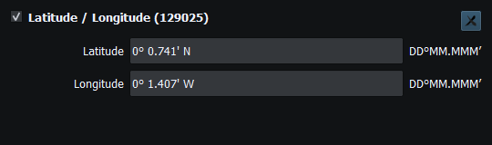
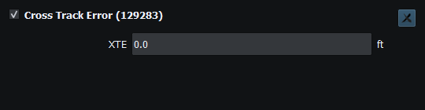
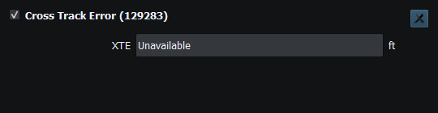
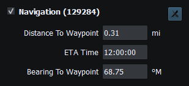

Use navigation fields to compare the generated course, instrument model and encoded data. They are measurements, not movement or Sending authorization. The Property Editor exposes canonical values; widgets and Object Tree apply display formatting.
| Measurement | Interpretation |
|---|---|
| XTE | Signed metres canonically; displayed distance units. The existing leg calculation determines side; preserve sign when comparing local fields and encoded 129283. Zero is valid, not unavailable. |
| Bearing/heading | Canonical radians; degrees and reference labels in the instrument. True/magnetic references must not be compared as identical. |
| Distance | Canonical metres; feet/miles/nautical units per preferences. Unavailable displays as Unavailable, not a huge negative distance. |
| ETA/time | UTC/time conventions belong to each PGN. Time-to-waypoint depends on usable speed; it is not a guarantee of arrival. |
Example: −1.9288 m is approximately −6.3 ft at one decimal place. The full value remains available in Property Editor and saved Layouts. An enabled source can replace it with a newer measurement, including valid zero or Unavailable.
Autopilot updates compatible navigation instruments. APB and RMB fields can be edited manually, but automatic Vessel Movement bindings for them are not available. Review each instrument's fields before enabling Sending.

Figure 82. Position uses the selected coordinate format; saved values retain their precision. Click to enlarge.
Figure 83. Negative cross-track error. The sign identifies the side of the route leg. Click to enlarge.

Figure 84. Zero cross-track error is a valid measurement. Click to enlarge.

Figure 85. Unavailable cross-track error indicates that no usable measurement is present. Click to enlarge.

Figure 86. Distance, ETA and bearing are navigation measurements, not route authorization or movement commands. Click to enlarge.
Route Overview · GPX/KML Import · GPX/KML Export · Selecting Chartplotter Routes · Route Requests and Authorization · Connection Troubleshooting · Enable, Dispatch and Sending · Engineering Units